Dag 1
Introduktion til AI, AI gennem historien og de grundlæggende principper bag generativ AI.

Dagens overblik
I dag bygger vi et fælles grundlag for resten af kurset. Vi bevæger os fra AI's historie og forskellige typer AI til generativ AI, sprogmodeller og de begreber, der forklarer, hvad der sker, når vi skriver til dem.
UCL’s diasshow: Dag 1
Her kan du bladre gennem det originale UCL-materiale direkte på siden. Brug pilene eller sidetallet til at følge undervisningen.
Bogen til kurset
Maskiner der tænker: algoritmernes hemmeligheder og vejen til kunstig intelligens af Inga Strümke følger os gennem hele forløbet. Den giver den lange linje bag det, vi arbejder med på skærmen: hvor idéen om tænkende maskiner kommer fra, hvad der er forsøgt undervejs, og hvorfor de sprogmodeller, vi bruger i dag, ser ud, som de gør.

Se hjemmefra inden dag 1
Du behøver ikke forberede dig på alt. Se de to anbefalinger, og tag gerne dine egne tanker med til samtalen.
The Thinking Game
Se The Thinking Game, som følger DeepMinds arbejde fra spil til videnskab og giver en menneskelig indgang til AI’s historie.
ChatGPT’s nyeste muligheder
Se OpenAI’s video om GPT-6 Astra, og læg mærke til, hvilke opgaver AI kan løse med tekst, stemme og værktøjer.
Hvad betyder noget for dig?
Notér tre ting, der betyder noget for dig, og tænk over én opgave fra dit arbejde, du gerne vil kunne bruge AI til.
Program for dagen
Følg UCL-sporet fra venstre mod højre. Brug højre kolonne, når du vil koble dagens begreb til en praktisk aktivitet.
| UCL’s diasshow | Mine udvidelser |
|---|---|
| Intro og forventninger Slides 1-10: Hvorfor AI, baggrund, forventningsafstemning, dagens program og hvad I ved om AI | Modul 1: AI på dit job En mere konkret præsentationsrunde med tavlens tre spalter.Dias 5 · Erstat Modul 1: AI på dit jobKør runden med tavlens tre spalter, så I kalibrerer holdet.Dias 6 · Udvid Forsiden: Din praksisVælg den praksis, du bygger til resten af kurset. |
| Øvelse: det tilfældige tal Slides 8 og 11: Gem et tal helt for dig selv, og få afsløringen tre dias senere, lige før papegøjerne | Øvelse 0 på denne side Trinene står klar, og afsløringen venter under øvelserne. |
| Papegøjen Slides 12-13: Samme spørgsmål stillet til Copilot og til ChatGPT, og hvad de to svarer | Modul 3: Hallucination Hvorfor to modeller kan være uenige, og hvordan du opdager det.Dias 12 · Udvid Flere værktøjer: ResearchPerplexity og Consensus viser kilden bag svaret. |
| AI gennem historien Slides 15-28: Fra Golem og skak til symbolsk AI, maskinlæring og generativ AI | Modul 6: Historien i elleve nedslag En senere, mere udfoldet tidslinje. |
| Sund skepsis Slide 29: Hvad må man lægge op? | Forsidens grundregel Private konti og fiktivt indhold, medmindre arbejdspladsen har givet lov. |
| Turing-øvelsen Slides 30-32: Menneske eller AI, efterfulgt af refleksion | Øvelsen på denne side Følg UCL’s tre dele og brug spørgsmålene til opsamlingen. |
| GPT og sprogmodeller Slides 33-38: GPT, modeller, sprogmodeller og generativ AI | Modul 1: Hvad skete der lige? Se prompt, sprogmodel og iteration i en konkret byggeoplevelse.Dias 36 · Udvid Flere værktøjer: De fem spørgsmålModeloversigten er let. Værktøjsvalg på jobbet kræver fem spørgsmål mere.Dias 38 · Udvid Dag 2: De syv byggeblokkeOpgave, rolle, format, kontekst, begrænsning, eksempler, data. |
| Prompts Slides 39-45: Hvad er en prompt, hvorfor er den vigtig, og hvordan bygger man videre? | Modul 1: Iterér på din app Samme princip: prøv, kig, ret og prøv igen.Dias 44 · Erstat Modul 3: Skriv og omskrivBrug en ægte opgave fra dit skrivebord i stedet for en prompt frit fra leveren.Dias 44 · Udvid Modul 1: Byg din første appSend den samme prompt til Lovable, og se den blive til noget, du kan klikke i. |
| Guardrails, tokens og context window Slides 46-54: Modellens sikkerhed, sprog og arbejdshukommelse | Modul 1: AI som mønstergenkender En praksisnær forklaring på, hvorfor modellen både rammer rigtigt og tager fejl.Dias 54 · Udvid Dag 2: Øvelse med billederLEGO-anden er forretten. Dag 2 bruger en hel øvelse på billedgenerering. |
| Generativ AI konstruktivt Slide 55: LEGO-anden og kreativ afprøvning | Modul 1: Byg din første app Gå fra idé til fungerende prototype med en prompt. |
| Opsamling og eksamen Slides 56-59: Erhvervscase, mundtlig prøve og næste gang | Prøven Samlet vejledning, når eksamensmaterialet er klar.Dias 59 · Udvid Dag 2: Tag med hjemmefraDe tre ting bliver til billedøvelsen. Headsettet til musikken. |
| Praksiseksempel Slides 60-61: Nørbæk Efterskoles hjemmeside er bygget i Lovable, og dialog om hvad I selv kunne bygge | Modul 1: Praksiseksemplet Noten med link til siden, så du kan se den efter i ro og mag. |
Samtaler og drøftelser
Hvad ved du om AI?
Tal i 10 minutter med din sidemakker om dit forhold til og din viden om AI.
Hvad skal faget kunne?
Tal om, hvad I håber at lære, hvilken arbejdsform I forventer, og hvad der vil gøre faget relevant.
AI eller menneske?
Efter Turing-øvelsen undersøger vi, hvad der virker overbevisende, og hvad mennesker og AI hver især gør bedst.
Hvad må man dele?
Vi bruger tommelfingerreglen: Del kun data, der tåler offentlighed, og tag selv ansvar for at kontrollere informationen.
Øvelser
- Bed din chatbot: »Nævn et tilfældigt tal mellem 1 og 30«. Bare det, uden mere.
- Hold svaret for dig selv. Ingen andre må se det, heller ikke din sidemakker.
- Gem tallet et sted, du kan finde det igen, for eksempel i en note på telefonen. Notér også, hvilken chatbot du spurgte.
- Gå sammen to og to, og få AI til at lave 10 spørgsmål.
- Besvar selv fem spørgsmål, og lad AI besvare de fem andre.
- Bland svarene, og lad en anden gruppe gætte, om hvert svar er skrevet af et menneske eller AI.
- Byt roller, og tal bagefter om forskellene mellem svarene.
- Skriv en prompt frit fra leveren.
- Indtast den i Copilot.
- Se, hvad der sker, når du bygger videre på prompten med mere kontekst eller et tydeligere ønsket output.
- Skriv en hemmelig sætning, som du ikke viser til nogen.
- Omdan den til tokens ved hjælp af den fælles token-tabel.
- Byt besked med din sidemakker, og detokenisér den.
- Drøft, om guardrails burde forhindre beskeden i at blive detokeniseret.
- Find tallet frem, du gemte i starten.
- Nu må det siges højt: saml alle holdets tal på tavlen.
- Se på fordelingen: hvor mange fik 27?
- Drøft: hvorfor svarer en sprogmodel ikke tilfældigt, og hvad fortæller det om, hvordan den virker?
Arbejdsark til øvelserne
Vælg ét arbejdsark, når du skal afprøve din prompt. Start enkelt, og byg derefter videre med mere kontekst, en målgruppe eller et bestemt format. Brug kun ufølsomt materiale.
Tekst til en bestemt modtager
Omskriv en tekst til et andet sprog, en anden tone eller en bestemt målgruppe. Prøv for eksempel at gøre den mere ungdommelig eller lettere at læse.
Åbn arbejdsarketSkriv en konfirmationssang
Afprøv, hvordan AI arbejder med genre, detaljer og personlige oplysninger i en sang om gaming, fodbold og det at være ung.
Åbn arbejdsarketLav en mødeplan
Giv AI en planlægningsopgave med timer, rullende fredage og faste hensyn. Undersøg bagefter, hvad der mangler i prompten.
Åbn arbejdsarketFå hjælp til Excel
Bed AI forklare eller skrive en formel, der sammenligner to ark. Tilpas sværhedsgraden til dit eget niveau.
Åbn arbejdsarketTal om Forsvaret
Brug offentlig statistik til at få AI til at beskrive udviklingen i værnepligtige og ansatte, og drøft forskellen på beskrivelse og konklusion.
Åbn arbejdsarketSkriv om IT-sikkerhed
Få AI til at skrive en intranetartikel og en flyer. Sammenlign, hvordan målgruppe, format og risici ændrer outputtet.
Åbn arbejdsarketBegreber fra dagen

| Begreb | Kort forklaring |
|---|---|
| Regelbaseret AI | Systemer, der følger regler, mennesker har skrevet. |
| Maskinlæring | Systemer, der lærer mønstre fra data i stedet for kun at følge regler. |
| Generativ AI | AI, der kan generere nyt indhold som tekst, billeder, lyd eller kode. |
| GPT | Generative Pre-trained Transformer: en model, der er fortrænet på store mængder data og genererer tekst. |
| Prompt | Din instruktion, kontekst og opgave til AI. |
| Guardrails | Sikkerhedsmekanismer, der styrer, hvad systemet må svare på. |
| Tokens | De mindre enheder, tekst opdeles i, for eksempel orddele eller tegn. |
| Context window | Den information modellen kan arbejde med under en samtale. |
Materialer
Materialerne følger samme bevægelse som dagen: forstå først, prøv derefter, og vælg til sidst den fordybelse, der er relevant for dig. Du behøver ikke læse alt.
Grundforståelse
Én kort video og én dansk læseguide giver det fælles sprog for generativ AI og LLM’er.
Guiden samler også AIBI’s begynderguide og Shaips vejledning. Vælg én af dem, ikke begge.
Prompting i praksis
Tre kilder om samme emne er samlet som ét spor. Start med Googles forklaring, og brug de to GPT-5-guides som eksempler på teknikker og udvikling.
Videoer om AI
Videoerne gentager grundforklaringen i forskellige dybder. Vælg én af de to første som supplement; gem de øvrige til senere.
Fordybelse og debat
Disse materialer er ikke nødvendige for øvelserne, men giver historiske, filosofiske og arbejdsmæssige perspektiver på AI.
Præsentation og videre fordybelse
- PowerPoint: Dag 1
- Litteratur: Maskiner der tænker (bogen til kurset, lån den gratis)
- Fordybelse: Forstå AI
- Visions of Artificial Intelligence and Reality (ikke påkrævet)
- Minding the Future: Artificial Intelligence (ikke påkrævet)
- LLM’er og SLM’er (for dig, der vil forstå lokale modeller)
- Kør LLM’er lokalt (praktisk ekstra spor)
- Microsoft Copilot (værktøjslink)
Inden næste gang
- Tænk over tre ting, der betyder noget for dig.
- Medbring headset.